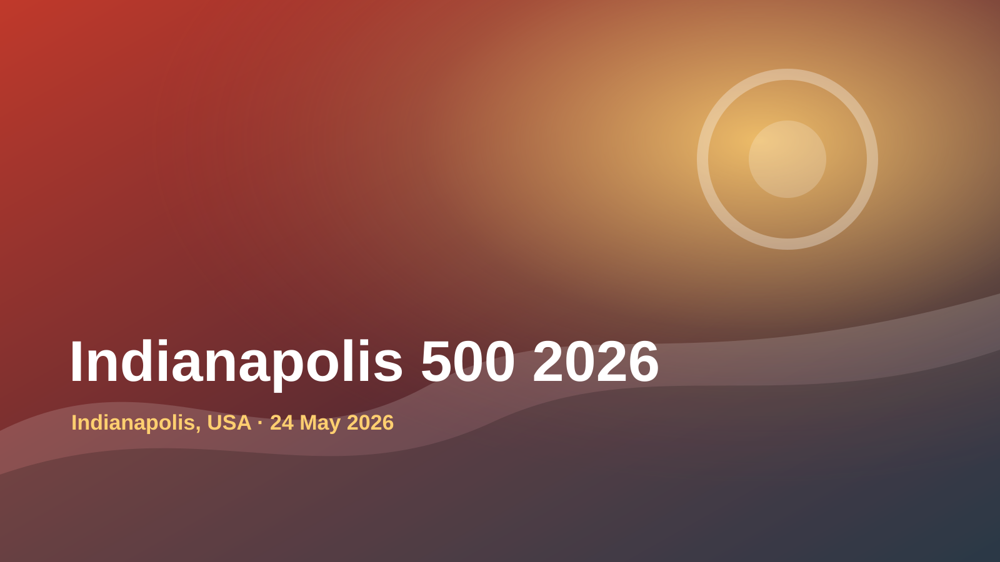
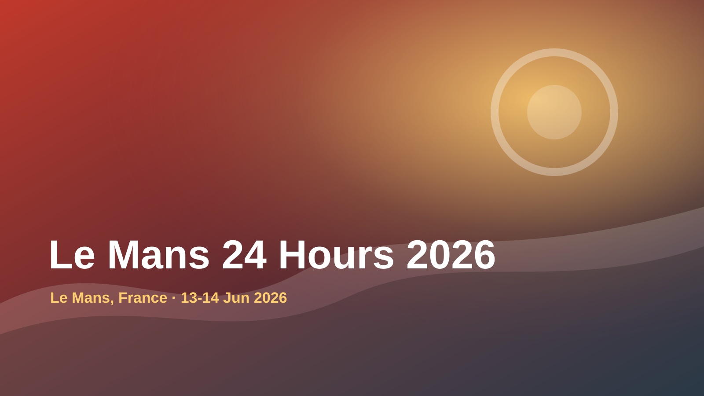

sport
Motorsport
Major events connected to Motorsport.

Indianapolis 500 2026Indianapolis, USA

Le Mans 24 Hours 2026Le Mans, France
sport
Major events connected to Motorsport.

Indianapolis 500 2026Indianapolis, USA

Le Mans 24 Hours 2026Le Mans, France